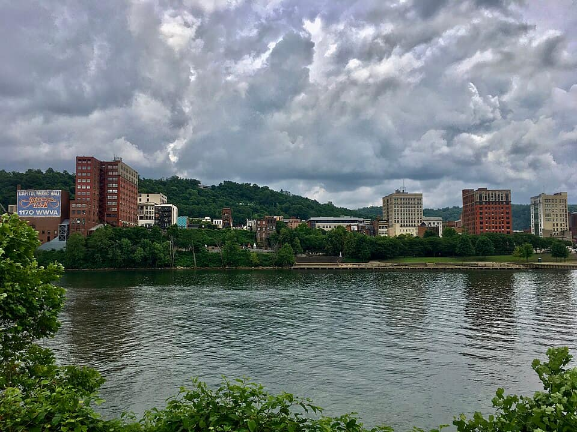
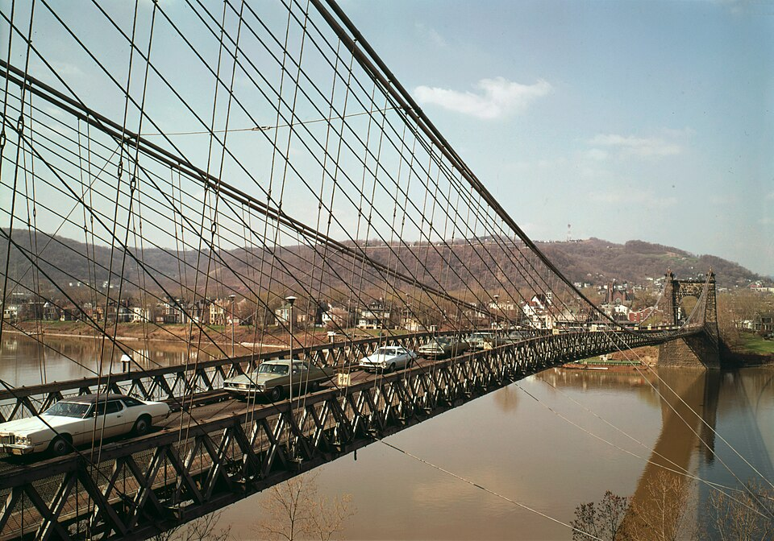
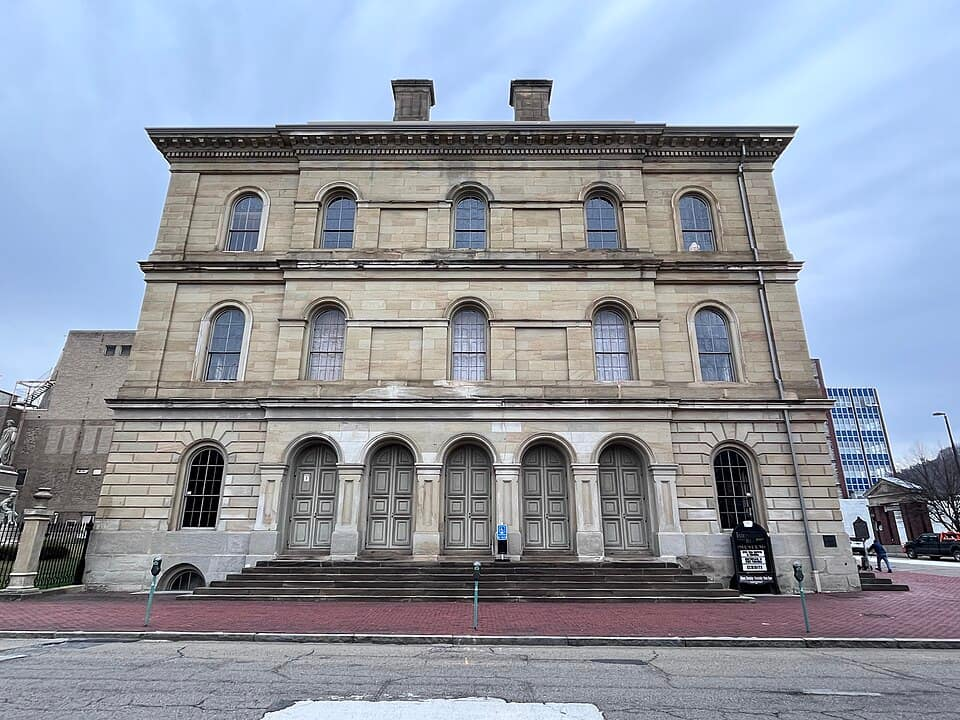
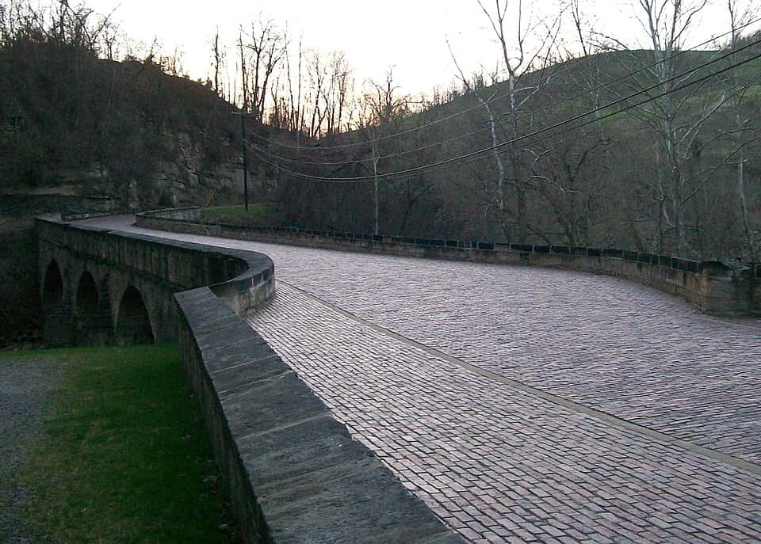

United States
Wheeling
the Ohio Valley & the National Road — Washington PA to Zanesville
42 places · 5 areas · every one sourced, pinned and status-checked · last checked · 2 closed, kept for the record. Ordered by tier, then by number of named sources. How we choose
Wheeling Suspension Bridge
Start with Wheeling Suspension Bridge

Start with

Wheeling, WV 15 places · area 1 of 5
downtown, Centre Market, Oglebay, Wheeling Island

Photo: Unknown author · Public domain · Wikimedia Commons (resized) 1 Must see within Wheeling, WV
Wheeling Suspension Bridge
The oldest major long-span suspension bridge in the world still carrying traffic. Built by Charles Ellet Jr. in 1849 (1010 ft, then the world's longest); rebuilt 1856 after a tornado, stay cables later added to a Washington Roebling design. NRHP 1970, ASCE National Historic Civil Engineering Landmark, National Historic Landmark 1976.
1010 Main St over the Ohio River (US-40), Wheeling, WV 26003
Recommended by , ,

Photo: WeaponizingArchitecture · CC BY-SA 4.0 · Wikimedia Commons (resized) 2 Must see within Wheeling, WV
West Virginia Independence Hall
The birthplace of West Virginia and a National Historic Landmark. Built 1859-60 as a federal custom house; site of the Wheeling Conventions and first WV Constitutional Convention that made the state during the Civil War. Restored museum, free tours Tue-Sat.
1528 Market St, Wheeling, WV 26003
Recommended by , ,
-
3 Must see within Wheeling, WV
Centre Market Historic District
Historic market district anchored by the 1853 Centre Market house, the oldest cast-iron market house in the country (older than the state itself). Two market buildings plus a walkable block of antique shops, eateries and salons; monthly First Friday events. NRHP historic district.
2200 Market St, Wheeling, WV 26003
Recommended by , ,
-
4 Must see within Wheeling, WV · Italian
DiCarlo's Pizza
The original Wheeling home of Ohio Valley-style pizza: the DiCarlo brothers opened here in 1949 and the cold-cheese-on-hot-crust method became a regional icon.
1311 Main St, Wheeling, WV 26003
Recommended by , ,
-
5 Must see within Wheeling, WV · Fish
Coleman's Fish Market
A Centre Market institution since 1914 turning out 1,000+ fish sandwiches a day (2,500 on Fridays); called the country's best fish sandwich by Gourmet and featured on Food Network.
2226 Market St (Centre Market), Wheeling, WV 26003
Recommended by , ,
-
6 Must see within Wheeling, WV · Italian
Figaretti's Restaurant
A 2026 James Beard America's Classics winner; family-run since 1948 from Anna Figaretti's garage-made sauce, and previously named the best Italian restaurant in West Virginia.
1035 Mount de Chantal Rd, Wheeling, WV 26003
Recommended by , ,
-
7 Must see within Wheeling, WV
Oglebay Resort & Park
1,700-acre municipal resort on industrialist Earl Oglebay's former estate. Home to the Good Zoo (WV's only AZA-accredited zoo), the Carriage House Glass Museum (3,000+ pieces of Wheeling glass incl. the 5-ft Sweeney Punch Bowl), the Mansion Museum, gardens, golf, and the winter Festival of Lights (300+ acres, 1M+ lights).
465 Lodge Dr, Wheeling, WV 26003
Recommended by ,
-
8 Worth the detour within Wheeling, WV
Capitol Theatre
Restored 1928 downtown theatre and full entertainment complex; home of the Wheeling Symphony Orchestra and host to touring Broadway, comedy and concert acts (Jerry Seinfeld, Willie Nelson).
1928 Market St, Wheeling, WV 26003
Recommended by ,
-
9 Worth the detour within Wheeling, WV
Kruger Street Toy & Train Museum
Tens of thousands of toys and trains housed in a restored 1906 Victorian schoolhouse, with a 2,000+ sq ft operating model-train layout, rotating exhibits and guided tours. A family favorite.
144 Kruger St, Wheeling, WV 26003
Recommended by ,
-
10 Worth the detour within Wheeling, WV
Wheeling Heritage Trail
About 13.5 miles of paved rail-trail on former railroad beds, looping through the city and along the Ohio River for walking and cycling.
Riverfront trailheads along the Ohio River, Wheeling, WV 26003
Recommended by ,
-
11 Worth the detour within Wheeling, WV · Cafés
Later Alligator
A cornerstone of Center Wheeling's revival since 2006, set in an 1860 building that won a $50,000 National Trust Backing Historic Small Restaurants grant; known for its wide crepe menu.
2145 Market St, Wheeling, WV 26003
Recommended by ,
-
12 Deep cut within Wheeling, WV
Monument Place (Shepherd Hall)
Stone plantation house built 1798 by Moses Shepherd on the old National Road, later renamed Monument Place. NRHP-listed. Owned by the Osiris Shrine Temple; interior access is limited (events/appointment) rather than a regular public museum.
91 Kruger St, Elm Grove, Wheeling, WV 26003
Recommended by , ,
-
13 Deep cut within Wheeling, WV
Oglebay Institute's Stifel Fine Arts Center
"Edemar," a 1910-14 Classical Revival mansion given to the Oglebay Institute in 1976 and run as an arts center with galleries, exhibitions and classes. Listed on the National Register of Historic Places (1992).
1330 National Rd, Wheeling, WV 26003
Recommended by ,
-
14 Deep cut within Wheeling, WV
Wheeling Island Historic District
A large residential island in the Ohio River with 1,110+ contributing buildings in Italianate, Queen Anne and Craftsman styles; NRHP historic district (1992). Also home to the Wheeling Island racetrack and casino.
Wheeling Island (across the Suspension Bridge), Wheeling, WV 26003
Recommended by ,
-
Closed — kept for the record · per Yelp listing 'WHEELING BREWING COMPANY - CLOSED' (updated Jul 2026); BeerAdvocate location marked closed, checked 2026-08-27 15
Wheeling Brewing Company — CLOSED
Centre Market brewpub founded 2014 that helped resurrect Wheeling's brewing heritage and anchor downtown revival; now permanently closed but a notable chapter of the district's comeback.
2247 Market St (Centre Market), Wheeling, WV 26003
Recommended by , ,

Washington, PA 8 places · area 2 of 5
Washington & Jefferson, LeMoyne House
-
1 Must see within Washington, PA
Meadowcroft Rockshelter & Historic Village
A National Historic Landmark rock overhang holding evidence of human habitation ~16,000-19,000 years ago — the oldest known site of human habitation in North America. Operated by the Heinz History Center; interpretive villages (16th-c. Indian village, 18th-c. trading post, 19th-c. village). Seasonal (roughly May-Oct).
401 Meadowcroft Rd, Avella, PA 15312
Recommended by , ,
-
2 Must see within Washington, PA · American
Century Inn
Built 1794 as Hill's Tavern, the oldest continuously operating inn on the National Road; on the National Register, it sheltered Presidents Washington, Jackson and Polk and reopened after a 2015 fire.
2175 E National Pike (US-40), Scenery Hill, PA 15360
Recommended by , ,
-
3 Must see within Washington, PA
LeMoyne House
1812 home of abolitionist Dr. F. Julius LeMoyne — Pennsylvania's first National Historic Landmark of the Underground Railroad. LeMoyne also built the Western Hemisphere's first crematory (tourable). Run by the Washington County Historical Society.
49 E Maiden St, Washington, PA 15301
Recommended by ,
-
4 Must see within Washington, PA
Pennsylvania Trolley Museum
A ~4-mile scenic round-trip aboard restored streetcars from a collection of nearly 50 cars (PA, WV, OH and beyond), plus a Visitor Education Center with a trolley simulator, exhibits and film. A top family stop.
1 Museum Rd, Washington, PA 15301
Recommended by ,
-
5 Must see within Washington, PA · Diners
Shorty's Lunch
A Washington, PA hot-dog lunch counter since the early 1930s, run by the Alexas family; its chili-topped 'everything' dog commands the kind of loyalty most brands only dream of.
34 W Chestnut St, Washington, PA 15301
Recommended by ,
-
6 Worth the detour within Washington, PA
David Bradford House
1788 stone townhouse of David Bradford, a leader of the 1794 Whiskey Rebellion. Restored house museum with period furnishings, hand-embroidered wainscot (1773) and a children's room.
175 S Main St, Washington, PA 15301
Recommended by ,
-
7 Worth the detour within Washington, PA
Washington County Courthouse
A 1900 Beaux-Arts courthouse by architect Frederick J. Osterling, crowned by a 150-ft dome topped with a statue of George Washington, with a grand central stairway and 40-ft stained-glass ceiling. NRHP 1974; still in use.
1 S Main St, Washington, PA 15301
Recommended by ,
-
8 Worth the detour within Washington, PA · American
The Union Grill
Opened 1967 and named for the stonemasons and union workers who filled its tavern; a downtown Washington fixture for Italian-American cooking and an Observer-Reporter Best-of-the-Best regular.
13 E Wheeling St, Washington, PA 15301
Recommended by ,

Ohio Valley 4 places · area 3 of 5
St. Clairsville & Belmont County OH

Photo: Bwsmith84 · CC BY 3.0 · Wikimedia Commons (resized) 1 Must see within Ohio Valley
Blaine Hill "S" Bridge
Built 1828, the oldest bridge in Ohio and the longest (345 ft) surviving three-arch sandstone "S" bridge on the National Road — the first federally funded highway. Named Ohio's official Bicentennial Bridge in 2003.
Historic National Rd (US-40), Blaine, OH 43909
Recommended by , ,

Cambridge & Guernsey County 5 places · area 4 of 5
Dickens Village, Salt Fork

Zanesville & the National Road to the Columbus edge 10 places · area 5 of 5
Muskingum, New Concord, Norwich
How we choose
Every place is recommended by named sources (review-aggregator star ratings never count as the recommender), pinned to its door from a published coordinate, and status-checked. Closed places stay, flagged, so you know they’re gone.
- Must see
- The places to plan a visit around — graded within each area, not across the city.
- Worth the detour
- Strong picks, worth going out of your way for.
- Deep cut
- For the curious: smaller, odder, more local.
Within each area, places are ordered by tier, then by number of named sources — never by popularity. Numbers on the cards match the pins on the map. No ratings, prices or opening hours are shown, because the guide doesn’t hold verified ones.
28 sights and 14 places to eat across Wheeling, WV, nearby Washington, PA, and the National Road (I-70) corridor west through eastern Ohio — St. Clairsville, Cambridge and Zanesville — to where the Columbus guide begins. Each is traceable to the source that named it. The valley’s canon is its own: DiCarlo’s Wheeling-style pizza, Coleman’s fish sandwich, WV pepperoni rolls, Zanesville’s Tom’s Ice Cream Bowl, plus the Suspension Bridge, Oglebay, the Y-Bridge and Dickens Village.
Take Wheeling with you
Every place, its sources, the Guidebook and the photos at a small size. Map tiles are not saved: offline, the map shows our own pin schematic and every place stays listed.